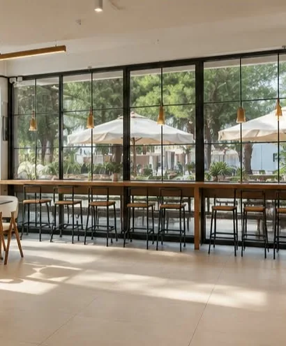
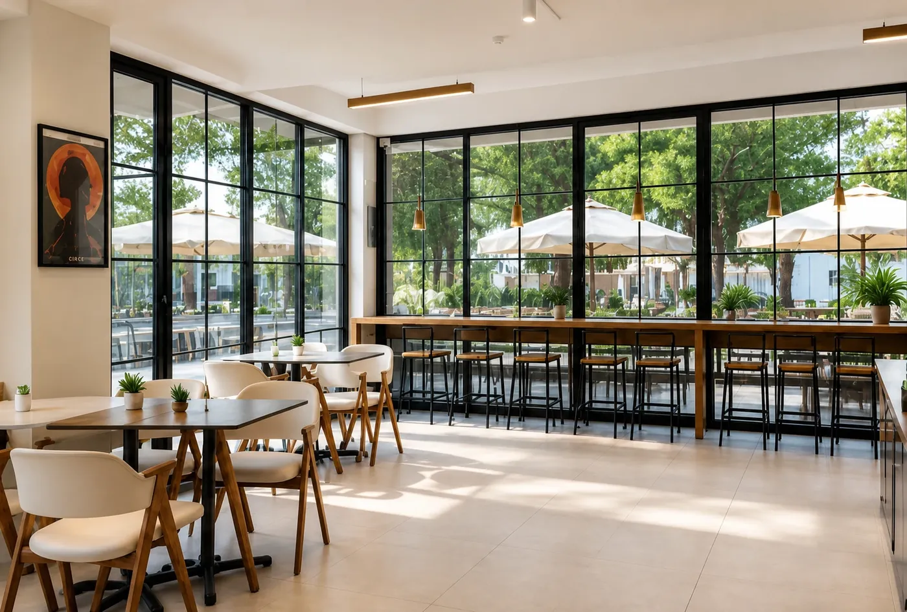
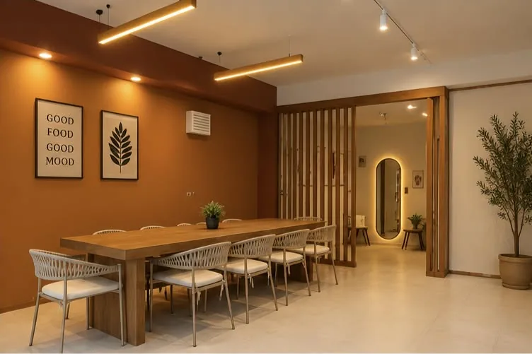
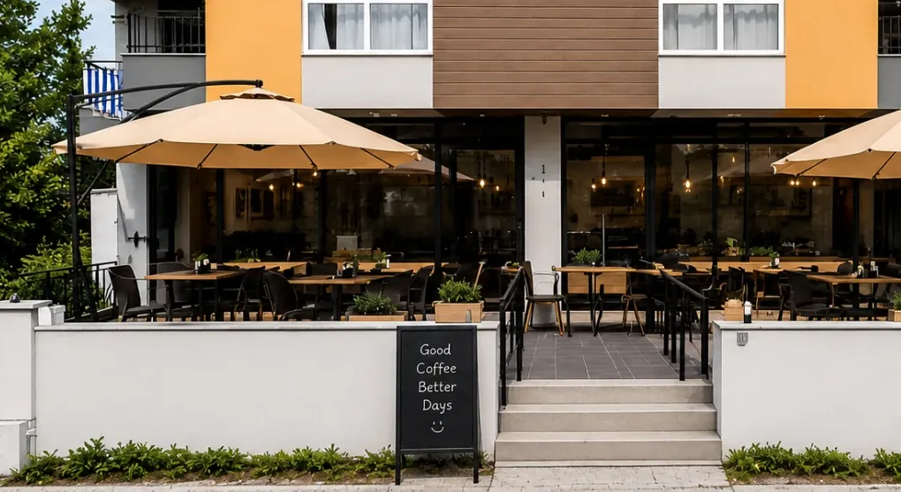
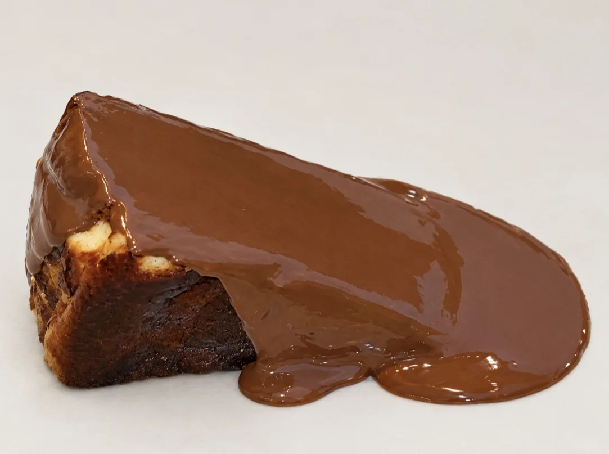

Her fincanda kalite
her ziyarette ayrı bir deneyim
Bucak'ta, Zeliha Tolunay Yüksekokulu'nun hemen yanındayız.

Onaç Mah. 2304. Sk. No: 6/1, Bucak. Zeliha Tolunay Yüksekokulu'nun yanı.



Kahvenin, lezzetin ve kalitenin buluşma noktası
Mehmet Akif Ersoy Üniversitesi Zeliha Tolunay Yüksekokulu'nun hemen yanında konumlanan Sora Coffee, nitelikli kahve deneyimini profesyonel barista dokunuşları, özgün lezzetler ve modern atmosferiyle buluşturuyor.
Her fincan kahve, tazeliğe ve kaliteye verilen önemin bir yansıması. Profesyonel baristalarımızın özenle hazırladığı kahveler, zengin aromaları ve dengeli lezzetleriyle kahve tutkunlarına ayrıcalıklı bir deneyim yaşatıyor. Günlük taze tatlılarımız ve özgün kokteyl seçeneklerimizle her damak zevkine hitap ediyoruz.

Günlük taze tatlılarımız
San Sebastian cheesecake: üstü karamelleşene kadar yanık, içi kaşığı bırakmayacak kadar kremamsı. Vitrinimizde her gün taze tatlılar sizi bekliyor.
Masanız hazır
Sora Coffee'de kalite bir tercih değil, her detayda hissedilen bir standarttır. İyi kahve, usta dokunuşlar, taze lezzetler ve ayrıcalıklı bir atmosfer için sizi Sora Coffee'ye bekliyoruz.